La ruptura de las negociaciones para renovar el sistema de financiación de Euskadi ha abierto una profunda crisis institucional entre los Gobiernos de Madrid y Vitoria.
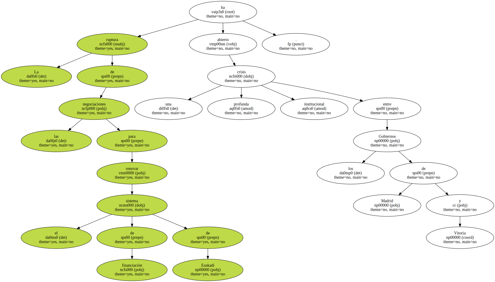Tal como se preveía , el Consejo de Ministros aprobó ayer la prórroga del actual concierto económico al expirar , a las ocho de la mañana , el plazo que había concedido al Ejecutivo vasco para lograr un acuerdo.
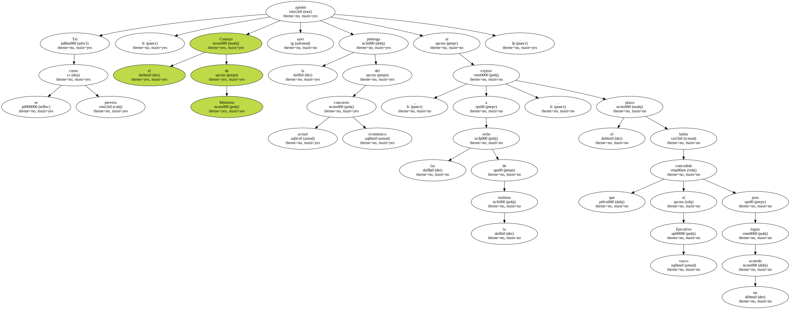El lehendakari , Juan José Ibarretxe , advirtió de que la prórroga unilateral supone " la ruptura " del pacto institucional entre ambas administraciones , aunque reclamó " seguir hablando ".
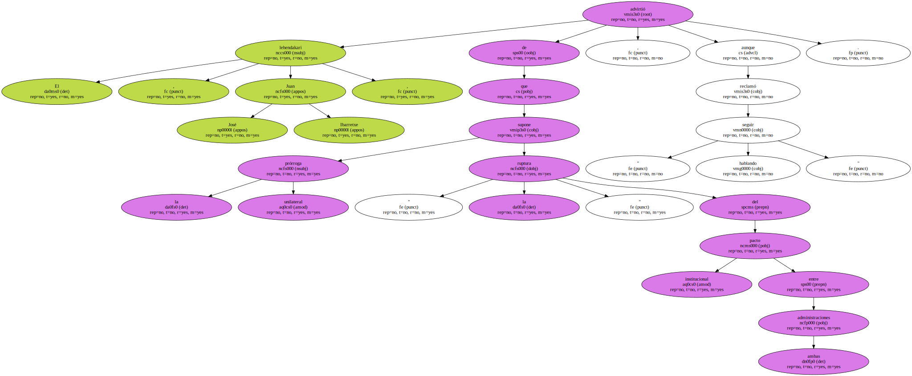" Euskadi no quiere romper , quiere pactar " , dijo.
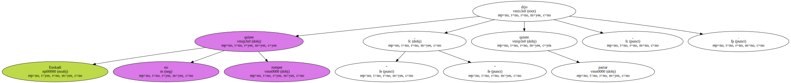Los cruces de acusaciones se prolongaron a lo largo del día.
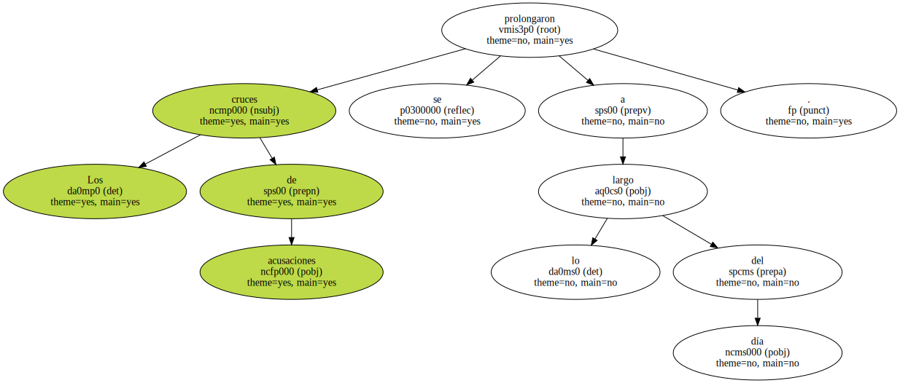El ministro de Hacienda , Cristóbal Montoro , también expresó su deseo de seguir negociando y achacó a la parte vasca " falta de voluntad política " para pactar el nuevo modelo , que debe entrar en vigor este 1 de enero.
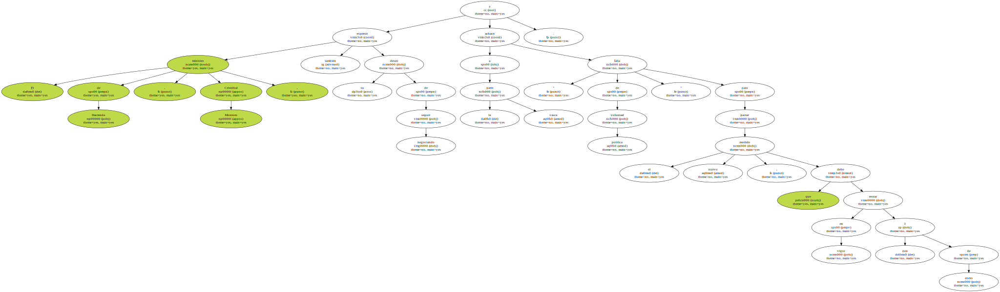El tiempo apremia , ya que el texto debe aprobarse por las dos Cámaras del Parlamento y ser publicado en el BOE antes del 31 de diciembre.
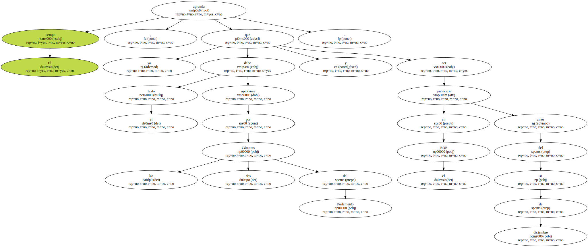En caso contrario , entrará en vigor la prórroga del actual modelo , lo que no impedirá seguir las negociaciones en el 2002.
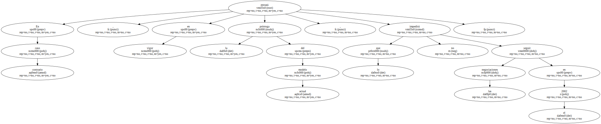El ministro avisó , eso sí , de que un acuerdo futuro no tendrá carácter retroactivo.
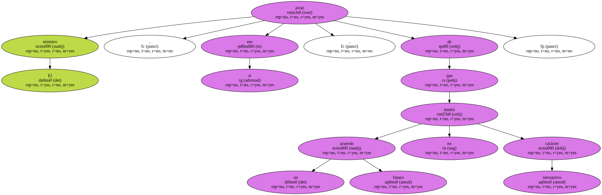Montoro se desplazó ayer por la tarde a Vitoria para explicar ante los medios de comunicación locales la posición del Gobierno.

Según el ministro , todas las diferencias por resolver son subsanables , excepto la pretensión del Gobierno vasco de tener representación propia en la Unión Europea cuando se discutan medidas que afecten a su financiación.
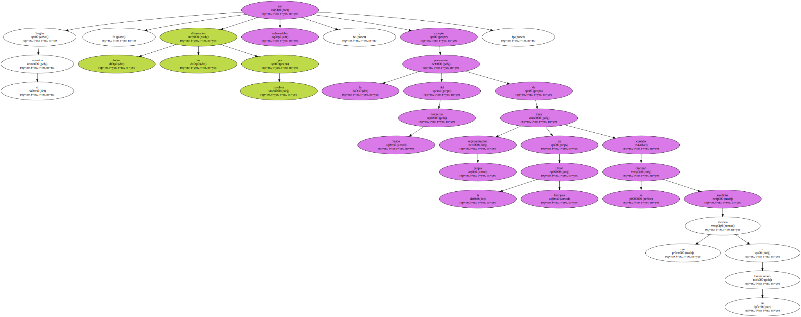El Ejecutivo central rechaza la presencia directa de comunidades.
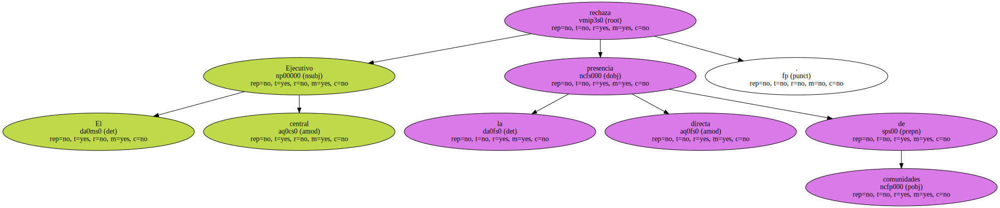" CORTINA DE HUMO ".
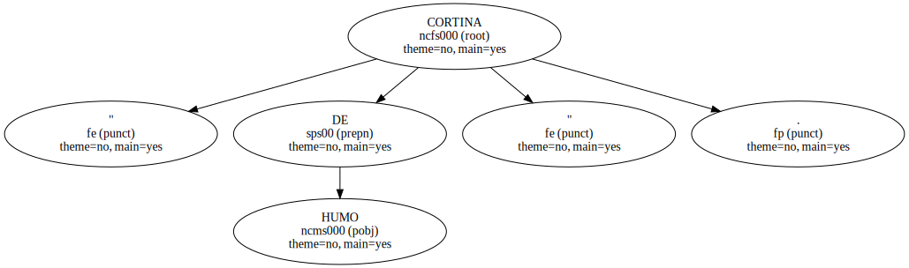El Departamento vasco de Hacienda acusó a Montoro de expandir " como cortina de humo " que el problema se remite a la participación en los órganos de decisión de la UE.
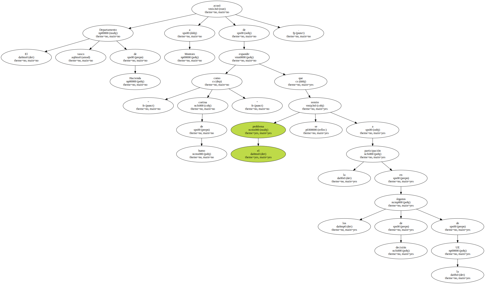Ibarretxe rechazó las " imposiciones " y dijo que sus negociadores han llegado a efectuar 11 propuestas diferentes para acordar la presencia vasca en la UE , así como tres " aportaciones globales " sobre otras cuestiones financieras.
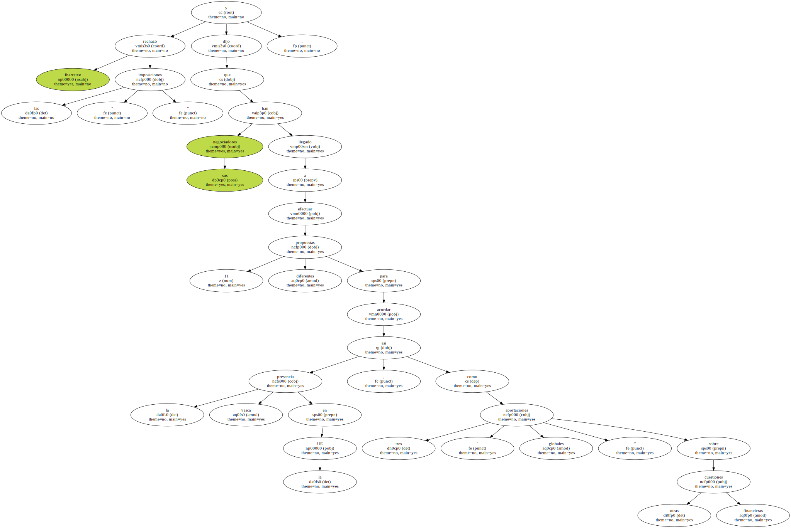Según el lehendakari , el ministerio fijó desde el primer momento en 188.677 millones de pesetas el nuevo cupo ( dinero que Euskadi paga al Estado por los servicios comunes que presta éste ) y que lo hizo en términos " de lo tomas o lo dejas ".
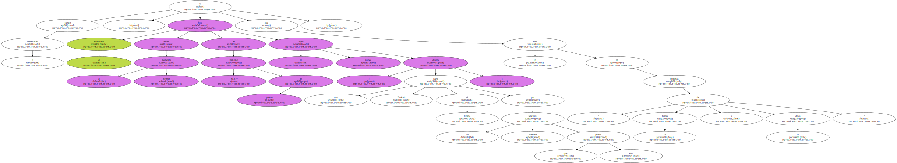Además , rehusó negociar la financiación de la Ertzaintza o la tributación de los no residentes.
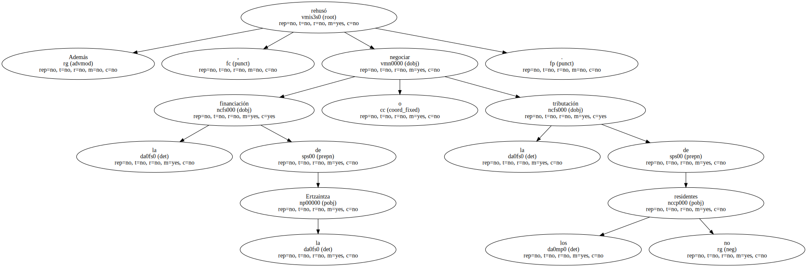Dijo que , por contra , el Ejecutivo vasco mostró más flexibilidad al subir su oferta inicial del cupo de 174.000 millones hasta 181.471 millones.
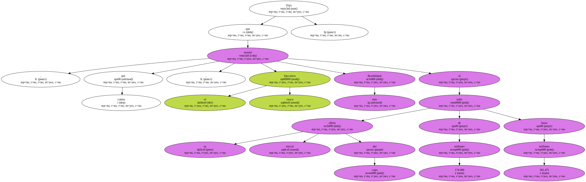Montoro no reveló a cuánto ascenderá el cupo en su propuesta de prórroga.
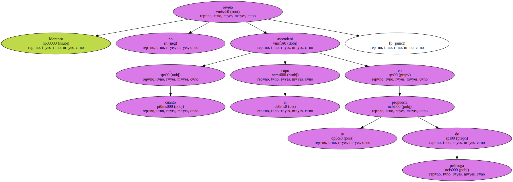La vicelehendakari , Idoia Zenarruzabeitia , alegó que no había podido desplazarse ayer a Madrid para terminar de negociar el concierto porque debía intervenir en un pleno parlamentario en Vitoria , pero que había expresado a Montoro su disposición a viajar una vez concluyera el debate y que recibió la respuesta por fax.

Apostilló que " lo mínimo " que debía hacer un " supuesto caballero español " era dar la cara y hablar con ella por teléfono.